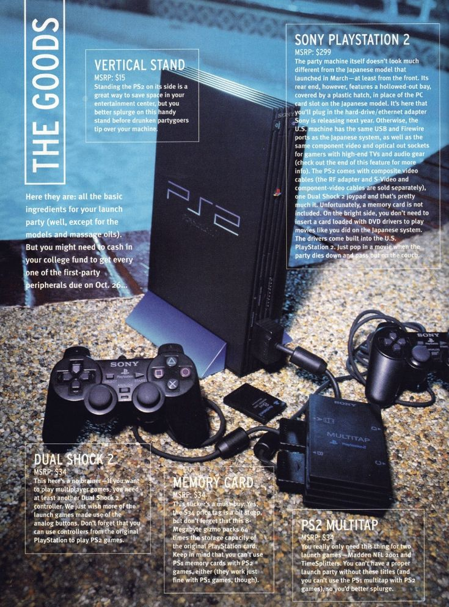
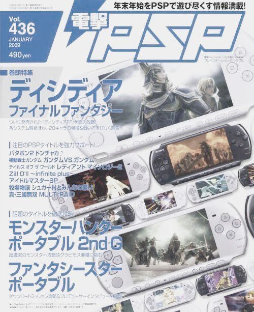
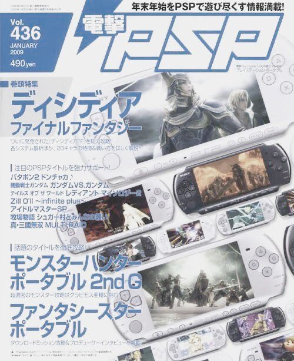

A Playstation 2 Uma Nova Era!, Bem-vindo à Era PlayStation 2 Em 2000, a Sony revolucionou o mundo dos videogames com o lançamento do PlayStation 2. Com gráficos impressionantes, controle DualShock 2 e compatibilidade com todos os jogos do PlayStation original, o PS2 trouxe experiências de jogo inéditas para toda a família. O console também é um leitor de DVD, permitindo que você jogue e assista aos seus filmes favoritos em um único dispositivo. Jogos icônicos como Grand Theft Auto III, Final Fantasy X, Metal Gear Solid 2 e Gran Turismo 3 oferecem aventuras emocionantes, mundos incríveis e entretenimento sem limites. Com inovação, tecnologia avançada e diversão para todos, o PlayStation 2 se tornou o console mais vendido da história, estabelecendo o padrão para a próxima geração de entretenimento digital. Explore, jogue e descubra tudo o que o mundo PlayStation tem a oferecer.
 
